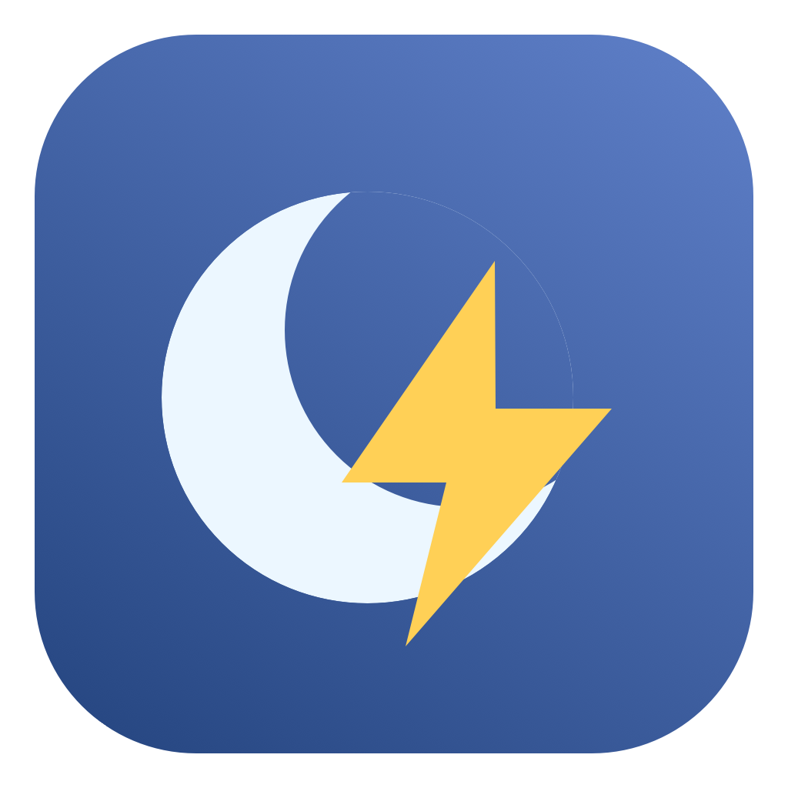

跑任务时不睡，
跑完了照常睡。
PowerSwitcher 是个菜单栏小工具，只有两个选项：任务模式让 Mac 不休眠，日常模式恢复正常休眠。跑 agent、编译、下大文件之前点一下，跑完再点回来。
一个包同时支持 Apple Silicon 和 Intel · 没有 Apple 公证，第一次打开要手动放行（见下面的「安装」）
想让 Mac 临时别睡，要么去系统设置里翻好几层，要么开终端敲 sudo pmset，跑完还得记得改回去，一不小心就忘了。PowerSwitcher 把这两套设置直接放进了菜单栏。
MacBook、iMac、Mac mini、Mac Studio、Mac Pro 都能用。没有电池的 Mac 会自动跳过电池相关的设置。
两种模式
任务模式 · 不休眠
Mac 不会自动休眠，一直到你切回来。笔记本用电池的时候也一样。
日常模式 · 正常休眠
闲置一段时间后自动休眠，时间你自己定。默认接电源 15 分钟，笔记本用电池 5 分钟。
有两点要知道：日常模式只是「允许」Mac 休眠，如果有后台程序拦着不让睡，菜单里会告诉你是哪个。另外，切回日常模式用的是你自己设的时间，不会恢复成装这个工具之前的系统设置。
一些小细节
- 菜单栏图标会跟着变：月亮是能睡，闪电是不睡。笔记本用电池时，闪电旁边会多一个感叹号，提醒你正在耗电。
- 点开菜单能看到当前的休眠时间、电源状态、电量，还有上次真正睡着是什么时候（PowerSwitcher 开着的时候才记录）。
- 每次切完都会再读一遍系统设置，确认真的改好了。没改成会尝试改回原样，并告诉你哪一步出了问题。
- 点「立即休眠」后，它会确认 Mac 有没有真的睡着，20 秒还没睡就告诉你原因。
- 笔记本用户：任务模式下合上盖子，屏幕可能不会灭。PowerSwitcher 会在合盖时把屏幕关掉，任务照跑；接着外接显示器时不会这么做。不需要的话可以在「设置…」里关掉。
- 第一次打开有个简单的向导，设好休眠时间就能用了。
1.5.0 新增
- 加了英文界面。系统语言是中文就显示中文，其他语言显示英文。
- 也可以在菜单的「语言 / Language」里手动换，重新打开应用后生效。
- 「关于」里加上了作者。
- 切换电源的逻辑没有动。
安装
- 下载
PowerSwitcher-1.5.0-universal.zip，解压。 - 把
PowerSwitcher.app拖进「应用程序」，打开，跟着向导走一遍。 - 以后点菜单栏图标切换就行。每次切换，系统会让你输一次管理员密码。
第一次打开如果弹窗说「无法验证开发者」，去「系统设置 → 隐私与安全性」，拉到最下面点「仍要打开」。不用为了这个去关 Gatekeeper。
密码是 macOS 自己的授权弹窗在要，PowerSwitcher 不会存。它也不装后台服务、不联网、不收集任何数据。Touch ID 暂时还不支持。
用完记得切回来
退出或删掉 PowerSwitcher，任务模式不会跟着取消，Mac 会一直不睡。用完请手动切回日常模式。笔记本尤其要注意：装包之前先切回来，确认已经睡着了再放进去，不然它会在包里一直耗电、发热。
万一应用打不开了，在终端运行 sudo pmset -a disablesleep 0 也能恢复。
已知限制
- 没有 Apple 公证，所以第一次打开会被系统拦。不放心的话可以看源码，自己编译。
- 实际切换目前只在一台 M1 Pro MacBook（macOS 15）上测过。Intel Mac、台式 Mac，还有 macOS 13 和 14 都还没在真机上跑过。没电池的情况有模拟测试覆盖，但没上真机。
- 合上盖子后任务能不能继续跑，不同机型可能不一样，第一次用最好自己试一下。
- 合盖关屏功能还没在真机上测过。
自动化测试：12 项模拟测试全部通过，arm64 和 x86_64 各 18 项自检全部通过。详细记录在源码包的 TESTING.md 里。
开源与反馈
原生 AppKit 写的，不依赖第三方库，MIT 协议。有问题或想法欢迎提 issue 和 PR。手上有 Intel Mac、台式 Mac，或者还在用 macOS 13、14 的，特别欢迎帮忙测一下。
报问题时说一下 macOS 版本、芯片、应用版本和复现步骤就行。贴日志前先看一眼，别把密码和序列号贴出来。
从源码编译
需要 macOS、Xcode Command Line Tools 和 Python 3。
python3 -m unittest discover -s Tests -v
python3 Scripts/build.py